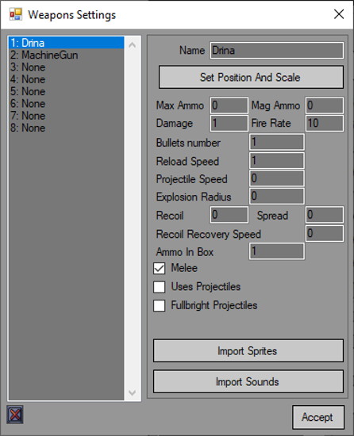
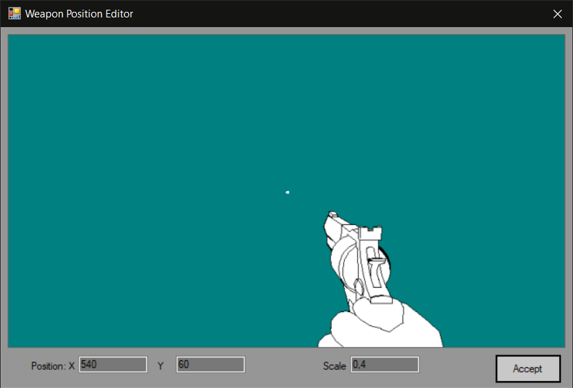
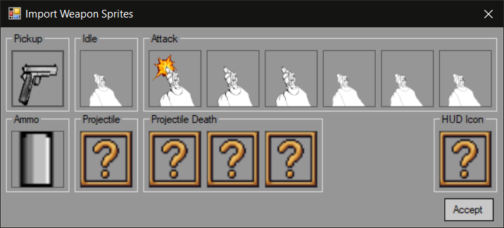
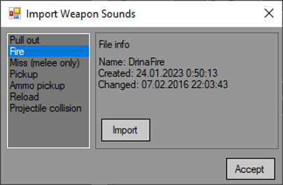

Easy FPS Editor lets you set up to 8 weapon types. You can do so in "Weapons Settings" option in "Objects Settings" menu.
By default there are no weapons. All you have to do to add it is rename one of them:

Each weapon is tied to a slot in player inventory binded to keys 1 to 8. To delete a weapon just click the button under the list. All properties are selfexplaining but there is a list with explanation at the bottom of this page.
Here you can set weapon position and scale:

Import sprites:

And import sounds:

Historically engine was made to work at 1280 by 720 resolution. So weapon position is bind to these sizes. Thus to center a weapon horizontally you'll need to set positon to (640 - half width of the sprite).
It is strongly recommended to store resources separated from the project folder as they will be copied to appropriate folder and renamed as needed.
Weapon settings:
Max ammo - max ammo player can hold for this weapon.
Mag ammo - number of ammo in a magazine. Set to 0 to disable reloading.
Damage - damage dealt to enemies or decorations.
Fire rate - weapon fire rate (in frames per second. Since 7 is default frames number, 7 equals 1 shot per second).
Bullets number - number of bullets per shot. If set higher than 1 a weapon will act as a shotgun.
Reload speed - weapon reload speed. in frames per second.
Projectile speed - projectile speed in units per second. One tile is 64 units.
Explosion Radius - explosion radius. If set, projectiles or hitscan attacks will create an explosion.
Recoil - amount of recoil which will lift weapon up. A reasonable value is around 2-4.
Spread - spread that will be added to each consecutive shot. Reduces with time. A reasonable value is around 6-8.
Recoil Recovery Speed - rate at which camera get back to its normal position after a shot. In units per second. A reasonable value is around 20-25.
Range - Range multiplier affects how far the attack/projectiles can reach. 1 is normal, 0.5 is half, 2 is double
Ammo in box - number of ammo given when ammo item is picked up.
Melee - sets if weapon is a melee type.
Uses projectiles - sets if weapon shoots projectiles or is a hitscan.
Fullbright projectiles - disabes or enables lighting on projectiles